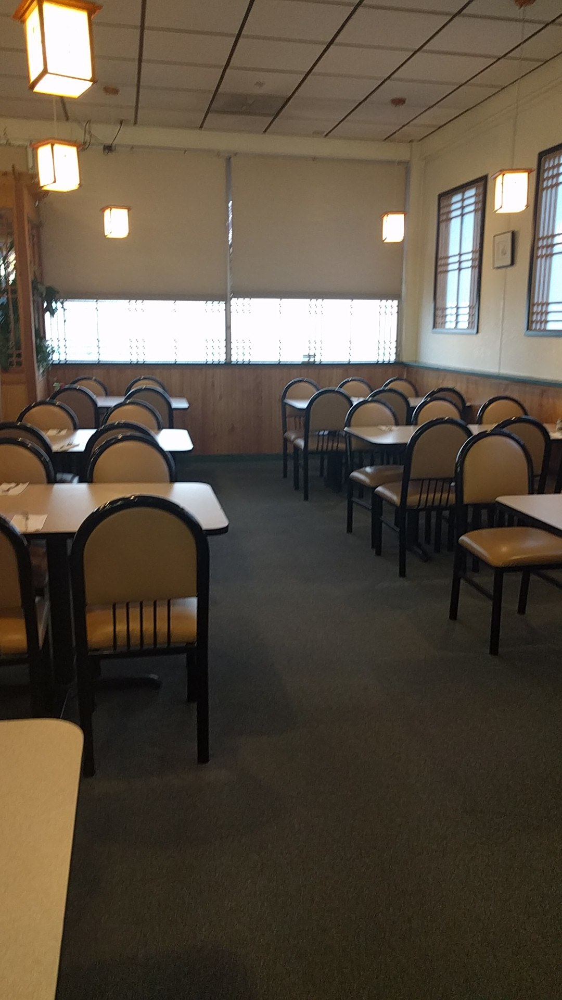

Village Fair Shopping Center
A counter, a dining room, and no pretending
White walls, wood trim, paper lanterns, a shoji screen behind the register and enough tables to sit a shift change.
It is a strip-mall teriyaki shop on South Meridian and it does not pretend otherwise. You order at the counter under the screens, you sit down or you take it with you, and the plate that comes out is the size people write reviews about.
New things turn up on the whiteboard by the register before they make the screens — House Fried Rice, Tofu Teriyaki and Spring Rolls all started there in marker, and all three are on the board now.